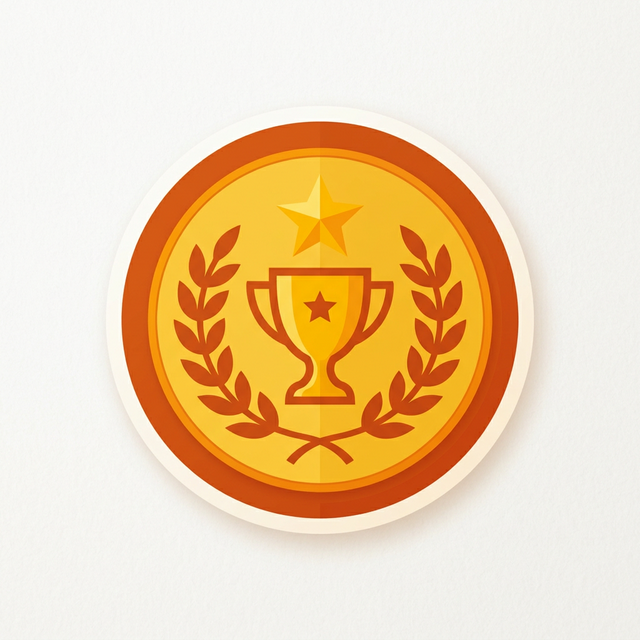

¡Bienvenidos a una nueva lección de Educación Física! Hoy aprenderemos a fortalecer nuestro cuerpo de forma segura.
🎯 1. Comprender la fuerza y cómo aplicarla correctamente.
🎯 2. Diferenciar la fuerza máxima de otros esfuerzos.
🎯 3. Aprender la importancia vital del estiramiento muscular.
Imagina que intentas levantar una piedra muy pesada para moverla de lugar. ¿Qué sientes en tus músculos?
¡Eso es la fuerza en acción!
Capacidad de vencer una resistencia externa.
La mayor carga que puedes mover de una sola vez.
Alargar el músculo para ganar flexibilidad y seguridad.
La fuerza máxima es el nivel más alto de tensión muscular que podemos generar. Se utiliza comúnmente en deportes de potencia como el levantamiento de pesas.
💡 No se trata de cuántas veces lo haces, sino de cuánto peso mueves en una sola repetición exitosa.
Toca los puntos rojos para descubrir qué sucede al aplicar fuerza.
¿Cuál de estas acciones describe mejor la Fuerza Máxima?
Para entrenar fuerza máxima con seguridad, ¿qué paso es el final?
Si quieres ayudar a tus padres a mover un mueble pesado, ¿qué es lo más importante?
Verdadero o Falso: ¿El estiramiento solo se hace antes de empezar?
¿Cómo crees que aplicar lo aprendido hoy te ayudará en tu vida diaria?

¡Felicidades, deportista!
Has completado la Lección 3 con éxito. Ahora eres más consciente de tu cuerpo y su seguridad.